" alt="">
Address: No.100, Pingleyuan, Chaoyang District, Beijing City, China
Email: guke.doctor@gmail.com; guke@bjut.edu.cn
Phone: +86-18310490075
Ke Gu received the B.S. and Ph.D. degrees in electronic engineering from Shanghai Jiao Tong University, Shanghai, China, in 2009 and 2015, respectively. He is currently a Professor with the Beijing University of Technology, Beijing, China.
His research interests include image analysis, environmental perception, quality assessment, and machine learning. He received the Best Paper Award from the IEEE Transactions on Multimedia (T-MM), the Best Student Paper Award at the IEEE International Conference on Multimedia and Expo (ICME) in 2016, and the Excellent Ph.D. Thesis Award from the Chinese Institute of Electronics (CIE) in 2016.
He was the Leading Special Session Organizer in the VCIP2016 and the ICIP2017, and serves as a Guest Editor for the Digital Signal Processing Journal. He is currently an Associate Editor of the IEEE ACCESS and the IET Image Processing. He is a Reviewer for 20 top SCI journals.
Highly efficient picture-based prediction of PM2.5 concentration
Ke Gu, Junfei Qiao,Xiaoli Li
In IEEE Transactions on Industrial Electronics (T-IE), 2018
Objective quality evaluation of dehazed images
Xiongkuo Min, Guangtao Zhai, Ke Gu, Xiaokang Yang, Xinping Guan
In IEEE Transactions on Intelligent Transportation Systems (T-ITS), 2018
Blind quality assessment of camera images based on low-level and high-level statistical features
Yutao Liu, Ke Gu (Corresponding Author), Shiqi Wang, Debin Zhao, Wen Gao
In IEEE Transactions on Multimedia (T-MM), 2018
Analysis of textural and structural characteristics for quality assessment of hybrid distorted images
Guanghui Yue, Chunping Hou, Ke Gu(Corresponding Author), Nam Ling
In IEEE Transactions on Multimedia(T-MM), 2018
Blind quality index for multiply distorted images using bi-order structure degradation and nonlocal statistics
Yu Zhou, Leida Li, Ke Gu, Weisheng Dong, Guangming Shi
In IEEE Transactions on Multimedia (T-MM), 2018
Partial-reference sonar image quality assessment for underwater transmission
Weiling Chen, Ke Gu, Xiongkuo Min, Fei Yuan, En Cheng, Wenjun Zhang
In IEEE Transactions on Aerospace and Electronic Systems (T-AES), 2018
Blind image quality estimation via distortion aggravation
Xiongkuo Min, Guangtao Zhai, Ke Gu, Yutao Liu, Xiaokang Yang
In IEEE Transactions on Broadcasting (T-BC), 2018
Biologically inspired blind quality assessment of tone-mapped images
Guanghui Yue, Chunping Hou, Ke Gu(Corresponding Author) , Shasha Mao, Wenjun Zhang
In IEEE Transactions on Industrial Electronics(T-IE), 2018
Adaptive levenberg-marquardt algorithm based echo state network for chaotic time series prediction
Qiao Junfei, Lei Wang, Cuili Yang, Ke Gu
In Neurocomputing, 2018
Analysis of structural characteristics for quality assessment of multiply distorted images
Guanghui Yue, Chunping Hou, Ke Gu (Corresponding Author), Nam Ling
In IEEE Transactions on Multimedia (T-MM), 2018
Saliency-induced reduced-reference quality index for natural scene and screen content images
Xiongkuo Min, Ke Gu, Guangtao Zhai, Menghan Hu, Xiaokang Yang
In Signal Processing(CGA), 2018
Reduced- reference image quality assessment in free-energy principle and sparse representation
Yutao Liu, Guangtao Zhai, Ke Gu, Xianming Liu, Debin Zhao, Wen Gao
In IEEE Transactions on Multimedia(T-MM), 2018
Quality assessment of DIBR- synthesized images by measuring local geometric distortions and global sharpness
Leida Li, Yu Zhou, Ke Gu, Weisi Lin, Shiqi Wang
In IEEE Transactions on Multimedia(T-MM), 2018
Optimizing multi-stage discriminative dictionaries for blind image quality assessment
Qiuping Jiang, Feng Shao, Weisi Lin, Ke Gu, Gangyi Jiang, Huifang Sun
In IEEE Transactions on Multimedia(T-MM), 2018
Objective quality assessment and perceptual compression of screen content images
Shiqi Wang, Ke Gu, Kai Zeng, Zhou Wang, Weisi Lin
In IEEE Computer Graphics and Applications(CGA), 2018
Blind quality assessment based on pseudo reference image
Xiongkuo Min, Ke Gu, Guangtao Zhai, Jing Liu, Xiaokang Yang, Chang Wen Chang
In IEEE Transactions on Multimedia(T-MM), 2018
A prediction backed model for quality assessment of screen content and 3D synthesized images
Vinit Jakhetiya, Ke Gu(Corresponding Author), Weisi Lin, Qiaohong Li, Sunil Prasad Jaiswal
In IEEE Transactions on Industrial Informatics(T-II), 2018
Just noticeable difference for natural images using RMS contrast and feed-back mechanism
Vinit Jakhetiya, Weisi Lin, Sunil Jaiswal, Ke Gu, Sharath Chandra Guntuku
In Neurocomputing(T-II), 2018
Recurrent air quality predictor based on meteorology- and pollution-related factors
Ke Gu, Junfei Qiao, Weisi Lin
In IEEE Transactions on Industrial Informatics(T-II), 2018
Reduced-reference quality assessment of screen content images
Shiqi Wang, Ke Gu, Xinfeng Zhang, Weisi Lin, Siwei Ma, Wen Gao
In IEEE Transactions on Circuits and Systems for Video Technology(T-CSVT), 2018
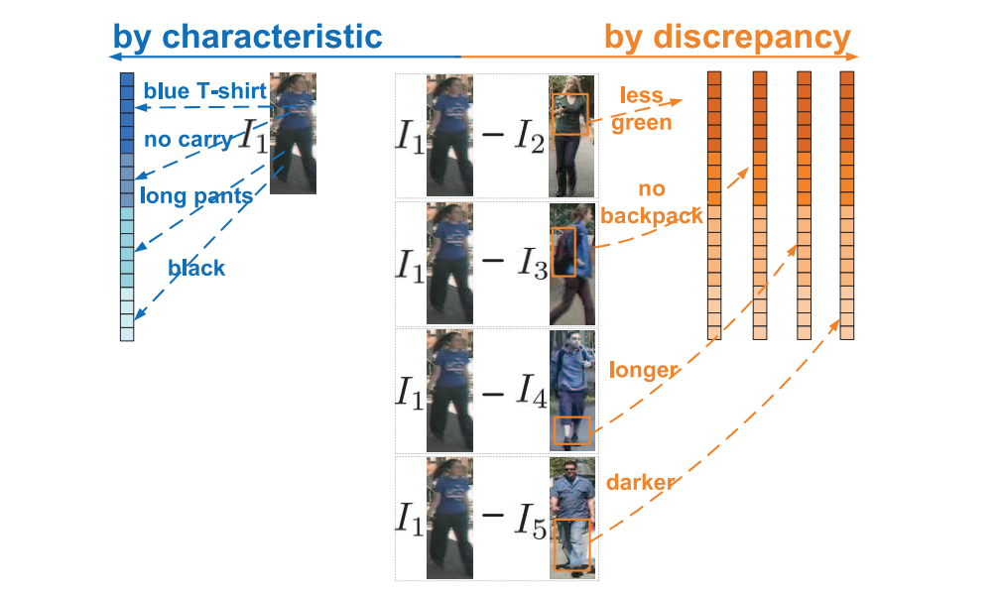
Person Reidentification via Discrepancy Matrix and Matrix Metric
Z Wang, R Hu, C Chen, Y Yu, J Jiang, C Liang, S Satoh
IEEE Transactions on Cybernetics, 2018, code
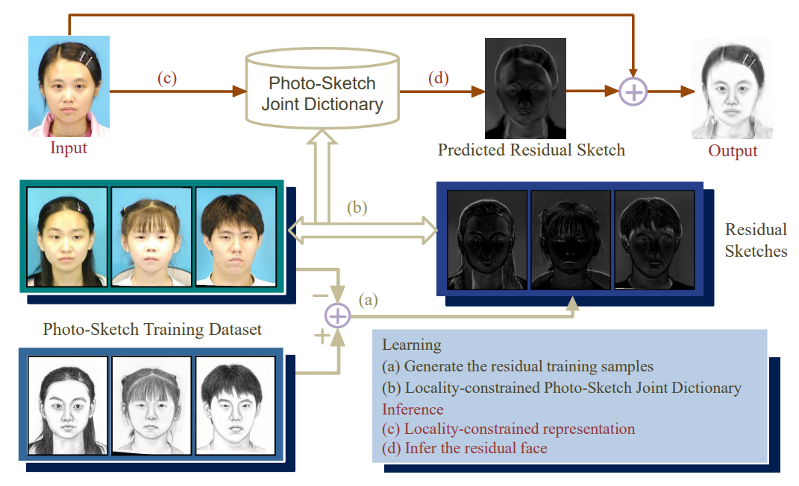
Graph-Regularized Locality-Constrained Joint Dictionary and Residual Learning for Face Sketch Synthesis
J Jiang, Y Yu, Z Wang*, X Liu, J Ma
IEEE Transactions on Image Processing, 2018
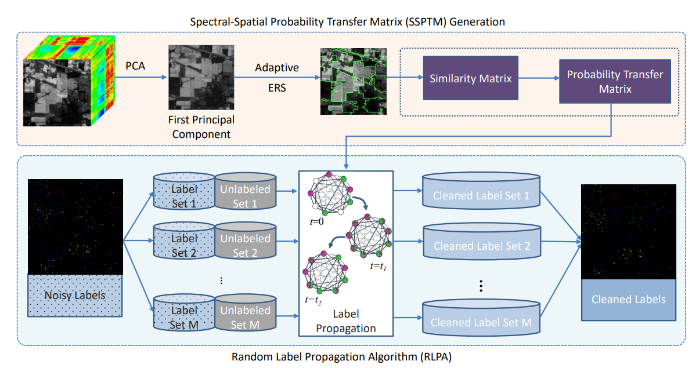
Hyperspectral Image Classification in the Presence of Noisy Labels
J Jiang, J Ma, Z Wang, X Liu
IEEE Transactions on Geoscience and Remote Sensing, 2018, code
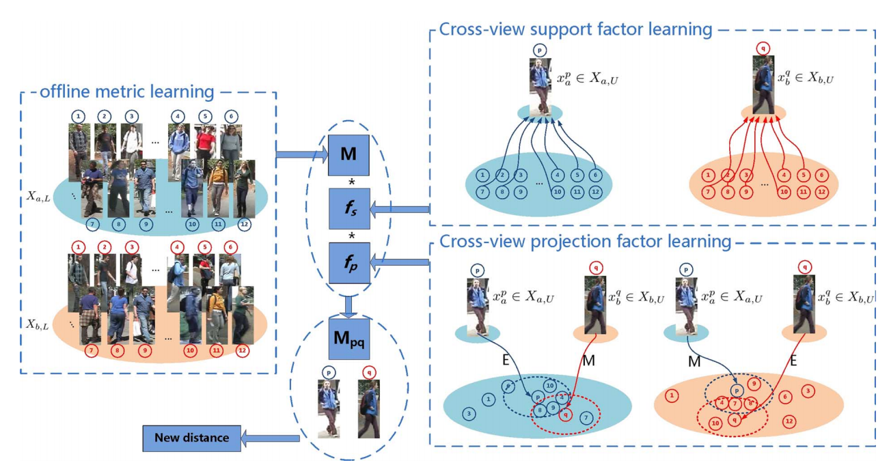
Zero-shot Person Re-identification via Cross-view Consistency
Z Wang, R Hu, C Liang, Y Yu, J Jiang, M Ye, J Chen, Q Leng
IEEE Transactions on Multimedia, 2016, code
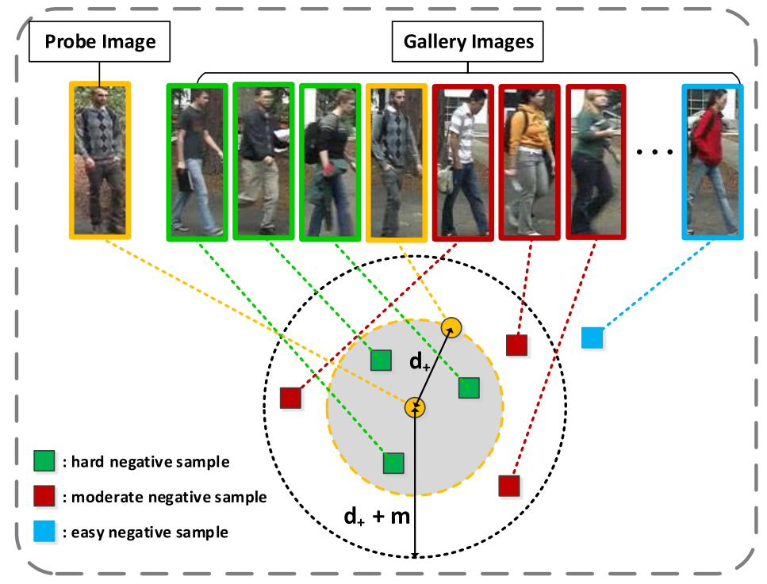
DeepList: Learning Deep Features with Adaptive Listwise Constraint for Person Re-identification
J Wang, Z Wang, C Gao, N Sang, R Huang
IEEE Transactions on Circuits and Systems for Video Technology, 2017, code
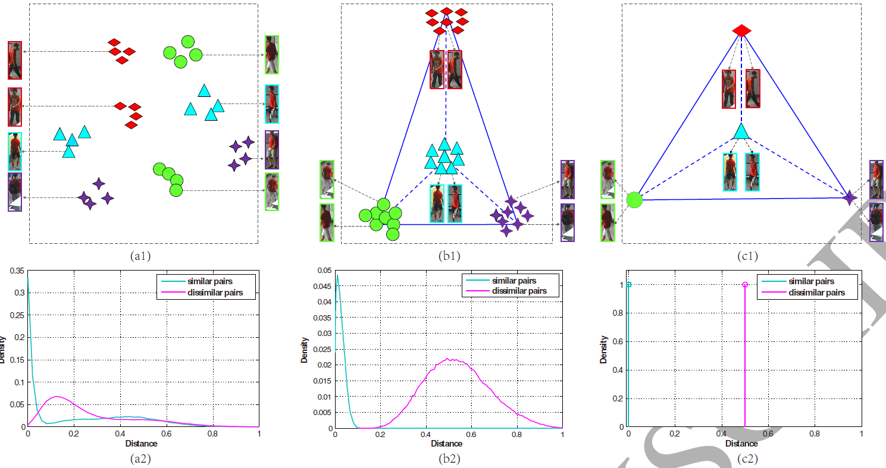
Equidistance Constrained Metric Learning for Person Re-identification
J Wang, Z Wang, C Liang, C Gao, N Sang
Pattern Recognition, 2017, code
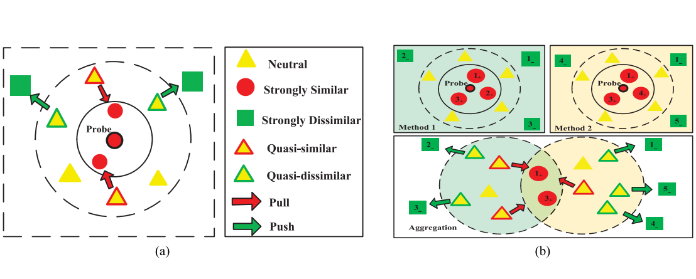
Person Re-identification via Ranking Aggregation of Similarity Pulling and Dissimilarity Pushing
M Ye, C Liang, Y Yu, Z Wang, Q Leng, C Xiao, J Chen, R Hu
IEEE Transactions on Multimedia, 2016, code
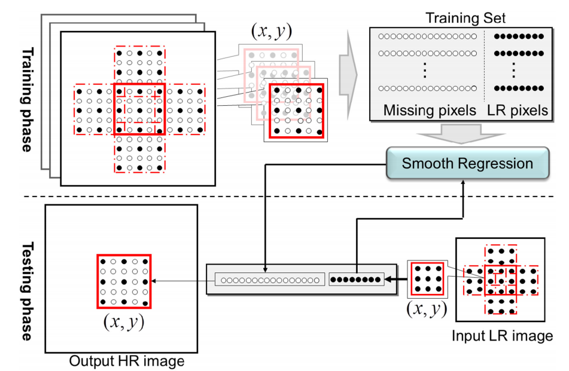
SRLSP: A Face Image Super-Resolution Algorithm Using Smooth Regression with Local Structure Prior
J Jiang, C Chen, J Ma, Z Wang, Z Wang, R Hu
IEEE Transactions on Multimedia, 2017, code
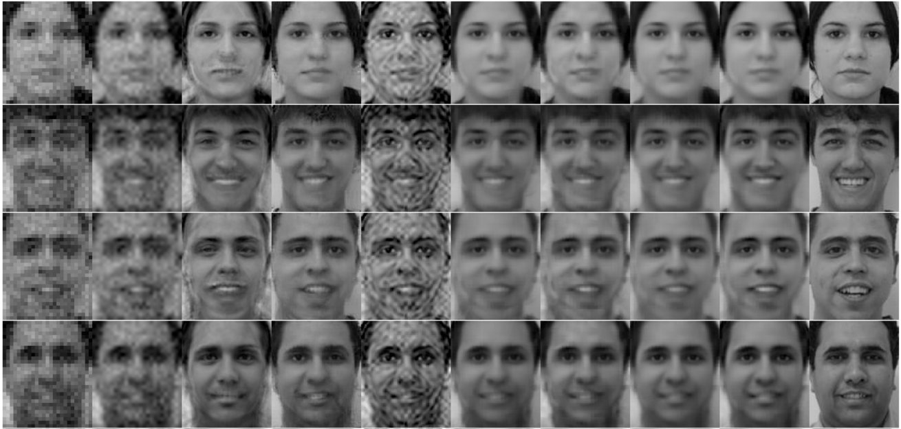
Noise Robust Face Image Super-Resolution Through Smooth Sparse Representation
J Jiang, J Ma, C Chen, X Jiang, Z Wang
IEEE Transactions on Cybernetics, 2017, code
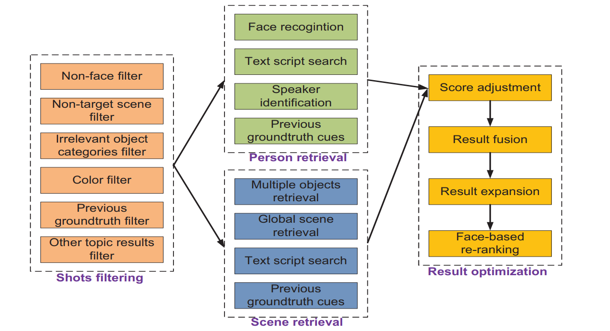
WHU-NERCMS at TRECVID2016: Instance Search Task
Z Wang, et al.
TRECVID Workshop, 2016, link, Top Performance
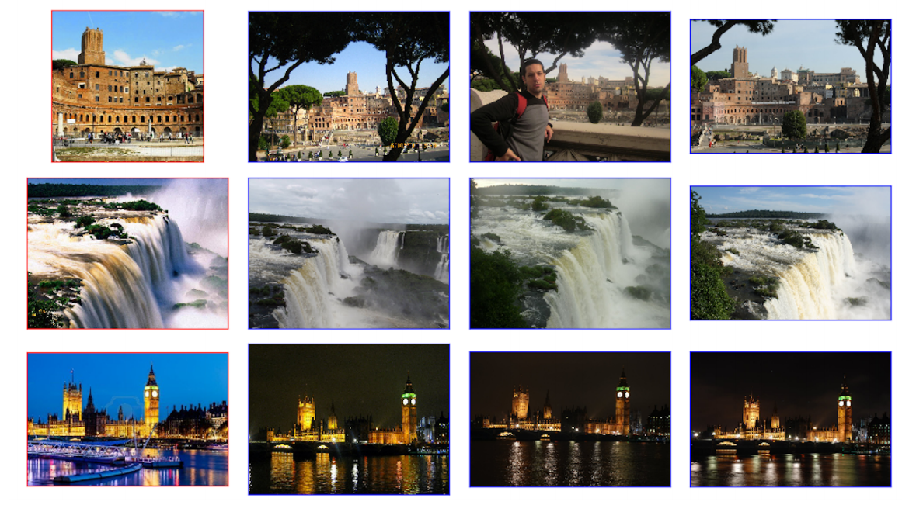
Landmark Retrieval via Local Guidance and Global Expansion
A Su, S Ly, F Yang, R Hinami, Q Meng, S Phan, Y Matsui, Z Wang, S Satoh
MIRU, 2018, slides, poster, Google Landmark Retrieval Challenge-7th